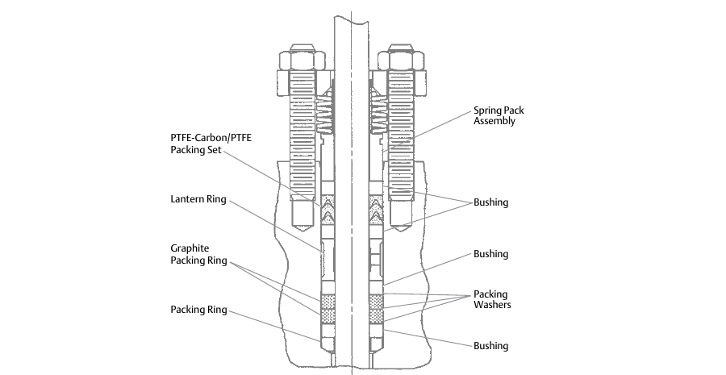
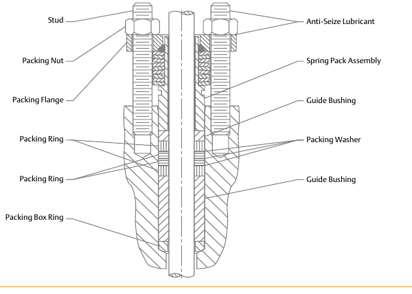

ENVIRO-SEAL Duplex vs. ENVIRO-SEAL Graphite ULF
ENVIRO-SEAL Duplex

PTFE and graphite combination; low friction, low emission; fire-tested to API Standard 589; up to 232°C (450°F); sliding-stem only, no rotary version.
ENVIRO-SEAL Graphite ULF

Graphite-based; patented ULF construction with very thin PTFE layers inside the packing rings; built for environmental applications above 232°C (450°F), where Duplex’s PTFE content no longer survives.
After Control Valve Handbook, 6th ed., Figs. 3.32 & 3.33 — used directly. Component Index: cvh-cmp-enviroseal-duplex-packing-system, cvh-cmp-enviroseal-graphite-ulf-packing-system.